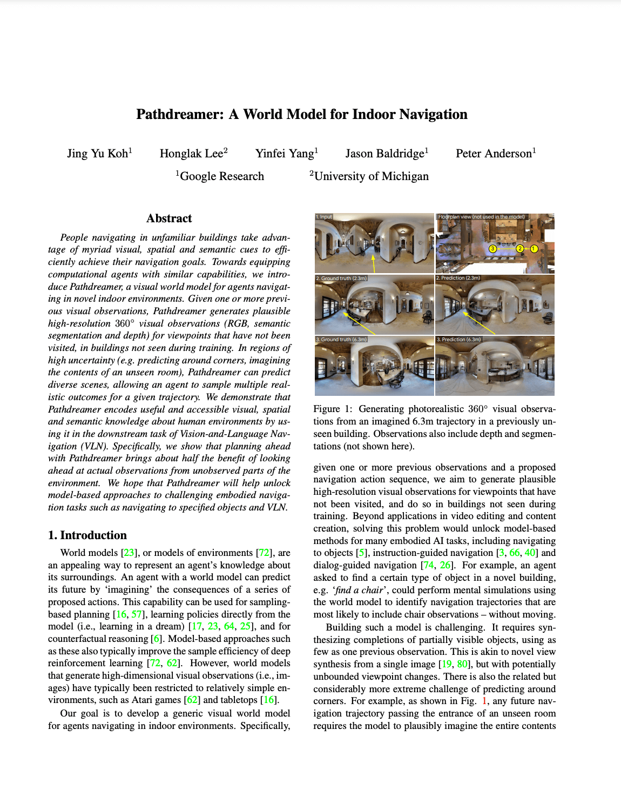

| Jing Yu Koh1 | Honglak Lee2 | Yinfei Yang1 | Jason Baldridge1 | Peter Anderson1 |
|---|
| 1Google Research | 2University of Michigan |
|---|
ICCV 2021
| [Paper] | [Video] | [Github] | [Colab Demo] |
|---|
People navigating in unfamiliar buildings take advantage of myriad visual, spatial and semantic cues to efficiently achieve their navigation goals. Towards equipping computational agents with similar capabilities, we introduce Pathdreamer, a visual world model for agents navigating in novel indoor environments. Given one or more previous visual observations, Pathdreamer generates plausible high-resolution 360 visual observations (RGB, semantic segmentation and depth) for viewpoints that have not been visited, in buildings not seen during training. In regions of high uncertainty (e.g. predicting around corners, imagining the contents of an unseen room), Pathdreamer can predict diverse scenes, allowing an agent to sample multiple realistic outcomes for a given trajectory. We demonstrate that Pathdreamer encodes useful and accessible visual, spatial and semantic knowledge about human environments by using it in the downstream task of Vision-and-Language Navigation (VLN). Specifically, we show that planning ahead with Pathdreamer brings about half the benefit of looking ahead at actual observations from unobserved parts of the environment. We hope that Pathdreamer will help unlock model-based approaches to challenging embodied navigation tasks such as navigating to specified objects and VLN.
|  |
Pathdreamer: A World Model for Indoor Navigation
Jing Yu Koh, Honglak Lee, Yinfei Yang, Jason Baldridge, Peter Anderson. ICCV, 2021. [arXiv] |
We've released code and model checkpoints to run inference on a pretrained Pathdreamer model, using any panorama as input. For more details on installing and running the model, visit our GitHub repository and Colab demo.
@inproceedings{koh2021pathdreamer, title={Pathdreamer: A World Model for Indoor Navigation}, author={Koh, Jing Yu and Lee, Honglak and Yang, Yinfei and Baldridge, Jason and Anderson, Peter}, journal={Proceedings of the IEEE/CVF International Conference on Computer Vision (ICCV)}, year={2021} }